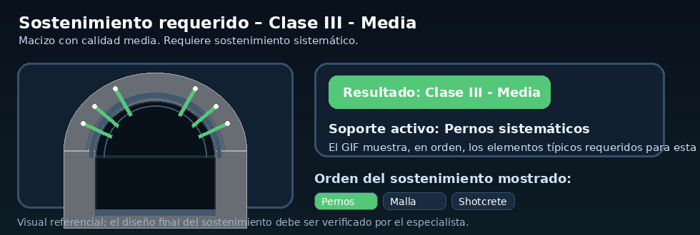

🏆 Clasificación del macizo rocoso
Clase RMRClase III - Media
Rango RMR41 - 60
Calidad del macizo★★★★★
Media
Media
Macizo con calidad media. Requiere sostenimiento sistemático.
🛠 GIF de sostenimiento requerido según el resultado
GIF dinámico AUTO

Excavación / avance
Avance y destroza. Avance típico de 1.5 a 3 m.
Pernos de roca
Sistemáticamente en clave y hastiales. L = 4 m. Espaciamiento 1.5 - 2.0 m.
Concreto lanzado
50 - 100 mm en clave. 30 mm en hastiales.
Cerchas / soporte adicional
No necesarias.
El GIF muestra en orden el sostenimiento típico de la clase obtenida.
🔎 Detalle del cálculo actual
R1 y R2 seleccionados
R1 = 7 porque la resistencia seleccionada es 50 - 100 MPa.
R2 = 13 porque el RQD seleccionado es 50 - 75%.
Resumen numérico
RMRb = 60; F₀ = -5; RMR final = 55.
La guía de fórmulas completa se abre desde el botón “Guía de fórmulas”, sin mostrarse en la pantalla principal.